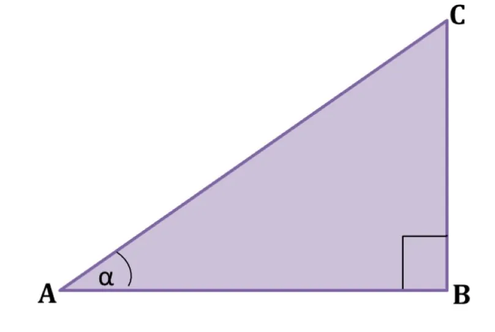
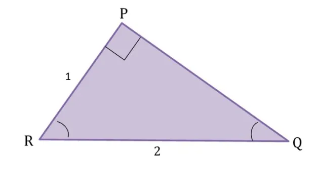
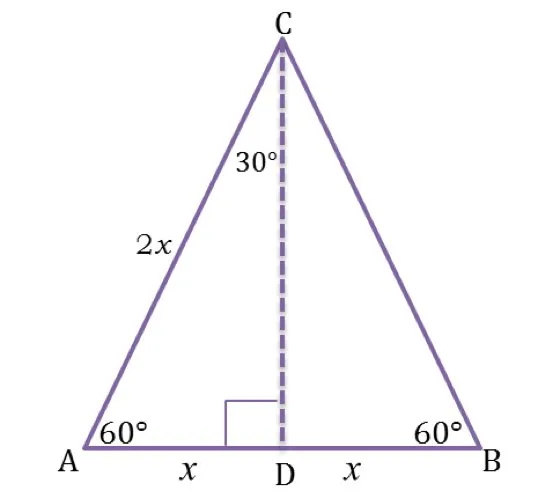

Setelah kita memahami ukuran sudut yaitu derajat dan radian, selanjutnya yang harus kita pahami dalam konsep trigonometri yaitu sinus, cosinus, tangen, cosecan, secan, dan cotangen pada segitiga siku-siku.
Trigonometri sangat erat kaitannya dengan sudut segitiga, karena asal kata trigonometri sendiri yang berarti mengukur tiga sudut (berasal dari kata Yunani, trigonon: tiga sudut dan metro: mengukur). Jika berbicara mengenai trigonometri tidak akan bisa lepas dari sinus, cosinus, tangen, cosecan, secan, dan cotangen.
Segitiga siku-siku yaitu segitiga dengan salah satu sudutnya adalah 90^{o}. Dalam segitiga siku-siku terdapat sisi miring yang disebut hipotenusa. Kuadrat hipotenusa yaitu jumlah dari kuadrat dua sisi lainnya. Secara sistematis, teorema Pythagoras dapat dinyatakan sebagai berikut.
$$\large a^{2} + b^{2} = c^{2}$$
dengan a dan b adalah sisi siku-siku dan c adalah sisi miringnya. Untuk lebih jelasnya maka perhatikan gambar berikut.
Untuk mengetahui rasio trigonometri, kita menggunakan segitiga siku-siku. Untuk itu, kita harus mengetahui letak sisi depan, sisi samping, dan sisi miring. Untuk lebih jelasnya perhatikan gambar berikut:
Setelah mengetahui sisi miring, sisi depan, dan sisi samping, selanjutnya kita akan membahas definisi sinus, cosinus, tangen, cosecan, secan, dan cotangen.
Contoh :
Tentukan nilai sinus, cosinus, dan tangen untuk sudut Q dan R pada segitaga berikut.
Jawab :
Sudut istimewa meliputi $$\large 0^{o},\large 30^{o}, \large 45^{o}, \large 60^{o}, \large 90^{o}$$, dan sudut istimewa lainnya pada kuadran II, III, dan IV. Sudut istimewa dihasilkan dengan menggunakan teori geometri.
Untuk mencari sudut istimewa dapat digunakan beberapa bidang datar untuk mencara nilai sudut istimewa tersebut.
1. Sudut 30 dan 60
Untuk mencari nilai perbandingan sudut 30^{o} kita menggunakan segitiga sama sisi.
Segitiga sama sisi memiliki sisi-sisi yang sama panjang dan sudut yang sama besar. Sudut-sudut segitiga sama sisi masing-masing adalah 60^{o}.
Segitiga sama sisi ABC memiliki panjang sisi-sisinya adalah 2x satuan. Titik D adalah titik tengah AB, sehingga jika ditarik garis dari titik C ke titik D akan membagi segitiga sama sisi tersebut menjadi segitiga sama sisi, dengan sudut siku-siku di D.
Karena titik D merupakan titik tengah, maka panjang AD =BD = \frac{1}{2} AC = x
maka diperoleh:
$$\bigtriangleup ACD \cong \bigtriangleup BCD \angle ACD \cong \angle BCD = 30^{o}$$ Sehingga $$\bigtriangleup ACD adalah segitiga siku-siku dengan\angle D$$ adalah sudut siku-siku.Dengan menggunakan teorema phytagoras, maka dapat ditentukan panjang sisi CD
$$CD^{2}=AC^{2}-AD^{2}$$
$$CD^{2}=2x^{2}-x^{2}$$
$$CD^{2}=4x^{2}-x^{2}$$
$$CD^{2}=3x^{2}$$
$$CD=\sqrt{3x^{2}}$$
$$CD=\sqrt{3}\, 1. Untuk \angle ACD = 30^{o}$$
$$sin \: 30^{o} = \frac{AD}{AC}= \frac{x}{2x}=\frac{1}{2}$$
$$cos \: 30^{o} = \frac{CD}{AC}= \frac{\sqrt{3}x}{2x}=\frac{1}{2}\sqrt{3}$$
$$tan \: 30^{o} = \frac{AD}{CD}= \frac{x}{\sqrt{3}x}=\frac{1}{3}\sqrt{3}$$
$$cosec \: 30^{o} = \frac{AC}{AD}= \frac{2x}{x}=2$$
$$secan \: 30^{o} = \frac{AC}{CD}= \frac{2x}{\sqrt{3}x}=\frac{2}{3}\sqrt{3}$$
$$cotan \: 30^{o} = \frac{CD}{AD}= \frac{\sqrt{3}x}{x}=\sqrt{3}$$
$$2. Untuk \angle CAD = 60^{o}$$
$$sin \: 60^{o} = \frac{CD}{AC}= \frac{\sqrt{3}x}{2x}=\frac{1}{2}\sqrt{3}$$
$$cos \: 60^{o} = \frac{AD}{AC}= \frac{x}{2x}=\frac{1}{2}$$
$$tan\: 60^{o} = \frac{CD}{AD}= \frac{\sqrt{3}x}{x}=\sqrt{3}$$
$$cosec \: 60^{o} = \frac{AC}{CD}= \frac{2x}{\sqrt{3}x}=\frac{2}{3}\sqrt{3}$$
$$secan \: 60^{o} = \frac{AC}{AD}= \frac{2x}{x}=2$$
$$cotan \: 60^{o} = \frac{AD}{CD}= \frac{x}{\sqrt{3}x}=\frac{1}{3}\sqrt{3}$$